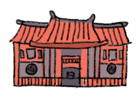

ประวัติศาสตร์ท้องถิ่น

วัดกัลยาณมิตร
วรมหาวิหาร

โบสถ์
ซางตาครูส
วัดประยุรวง
ศาวาส

กุฎีขาว
ศาลเจ้า
เกียนอันเกง

โบสถ์ซางตาครูส สร้างขึ้นเมื่อปี พ.ศ. 2312 พระเจ้าตากสินมหาราชได้พระราชทานที่ดินบริเวณชุมชมกุฎีจีนให้แก่ บาทหลวงคอรร์ (Corre) ชาวไทยเชื้อสายโปรตุเกสให้สร้างโบสถ์นิกาย โรมันคาทอลิกแห่งแรกในไทย
โบสถ์ซางตาครูส สร้างขึ้นเมื่อปี พ.ศ. 2312 พระเจ้าตากสินมหาราชได้พระราชทานที่ดินบริเวณชุมชมกุฎีจีนให้แก่ บาทหลวงคอรร์ (Corre) ชาวไทยเชื้อสายโปรตุเกสให้สร้างโบสถ์นิกาย โรมันคาทอลิกแห่งแรกในไทย
อดีตเป็น
โบสถ์ไม้สัก
เดิมเป็นโบสถ์ไม้สักทั้งหลัง
แต่หลังจากเกิดเหตุการณ์ไฟไหม้
ก็ได้มีการบูรณะใหม่ด้วยการก่ออิฐถือปูน
ต่อมาโบสถเริ่มทรุดโทรงลง
คุณพ่อกูเลียลโม กิ๊น ดา ครูส
จึงดำเนินการบูรณะในปี พ.ศ. 2459
จนเป็นอาคารหลังใหม่อย่างที่เห็น
กันในปัจจุบัน
รูปแบบสถาปัตยกรรม
เป็นการผสมผสานกันระหว่างศิลปะแบบนีโอคลาสสิค และเรเนอซองส์
ลักษณะของโดมนั้นถอดแบบมาจากโดมของ มหาวิหารฟลอเรนซ์ ที่เมืองฟลอเรนซ์ ประเทศอิตาลี
รูปแบบสถาปัตยกรรม
เป็นการผสมผสานกันระหว่างศิลปะแบบนีโอคลาสสิค และเรเนอซองส์
ลักษณะของโดมนั้นถอดแบบมาจากโดมของ มหาวิหารฟลอเรนซ์ ที่เมืองฟลอเรนซ์ ประเทศอิตาลี
ภายในโบสถ์ก็ตกแต่งด้วยสีขาว สีดำ
และสีทองเป็นหลัก
มีกระจกสีประดับอยู่ตรงหน้าต่าง
ประกอบไปด้วยภาพจิตรกรรมฝาผนัง
ที่บอกเล่าถึงประวัติของคริสต์ศาสนา
ระฆังการิย็อง
x
ระฆังการิย็อง
องค์ประกอบของระฆังชุดนี้ก็จะประกอบไปด้วยระฆัง 16 ใบ ที่มีเสียงของโน้ตที่ต่างกันสามารถเล่นเป็นเพลงได้ด้วยการกดแป้นไม้ที่มีลักษณะคล้ายกับเปียโน ลงไปสายสลิงที่โยงไว้กับแป้นจะทำหน้าที่ดึงค้อนที่แขวนอยู่ด้านในตัวระฆังให้กระทบกับใบระฆังจนเกิดเสียงขึ้นมา การเล่นแบบนี้ต้องออกแรงกดค่อนข้างมากเพราะตัวค้อนแขวนมีน้ำหนักเยอะพอสมควร
วัดกัลยาณมิตรวรมหาวิหาร
โบสถ์ซางตาครูส